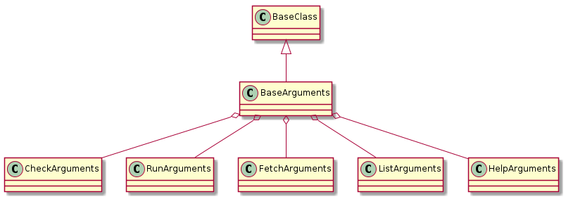

"""tuna (a metaheuristic maximizer)
Usage: tuna -h | -v
tuna [--debug|--silent] [--pudb|--pdb] <command> [<argument>...]
Help Options:
-h, --help Display this help message and quit.
-v, --version Display the version number and quit.
Logging Options:
--debug Set logging level to DEBUG.
--silent Set logging level to ERROR.
Debugging Options:
--pudb Enable the `pudb` debugger (if installed)
--pdb Enable the `pdb` (python's default) debugger
Positional Arguments:
<command> The name of a sub-command (see below)
<argument>... One or more options or arguments for the sub-command
Available Sub-Commands:
run Run a plugin
fetch Fetch a sample configuration-file
help Display more help
list List known plugins
check Check a configuration
To get help for a sub-command pass `-h` as the argument. e.g.:
tuna run -h
"""
class ArgumentsConstants(object):
"""
Constants for the arguments
"""
__slots__ = ()
debug = "--debug"
silent = '--silent'
pudb = "--pudb"
pdb = '--pdb'
trace = '--trace'
callgraph = '--callgraph'
command = "<command>"
argument = '<argument>'
# end ArgumentConstants
docopt(doc[, argv, help, version, options_first]) |
Parse argv based on command-line interface described in doc. |
DocoptExit([message]) |
Exit in case user invoked program with incorrect arguments. |

BaseArguments |
|
BaseArguments.arguments |
|
BaseArguments.sub_arguments |
|
BaseArguments.debug |
|
BaseArguments.silent |
|
BaseArguments.pudb |
|
BaseArguments.pdb |
|
BaseArguments.trace |
|
BaseArguments.callgraph |
|
BaseArguments.reset |